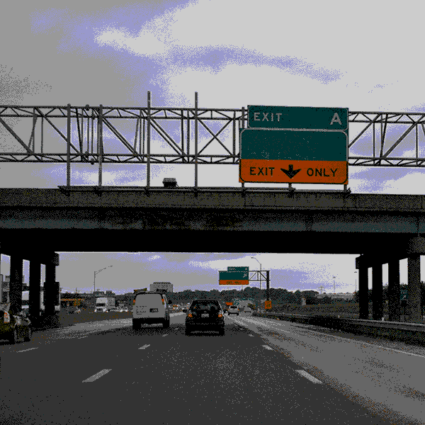

--- enter
==> [once] intro
==> [highwayStep>=69] walked-lot
==> [highwayStep>=4] walked-bit
--- intro
[cont] Do you like to drive? {no i'm a passenger princess|ofc}
Either way, you may need to find the keys to the RV. {sounds fake?}
==> click
--- walked-bit
==> [once] walked-bit-once
--- walked-bit-once
[cont] I'm getting tired just looking at you! {yes,}
[cont] You'll never make it at this rate. {yes...}
==> click
--- walked-lot
==> [once] walked-lot-once
--- walked-lot-once
[cont] You're pretty committed to this. {...}
I think we're still a ways away. {hmm...}
==> click
--- click
[!foundVehicle] Gosh isn't walking tiring? Wouldn't you like to get your keys? {maybe?}
[+foundVehicle,highwayStep<=68] Gosh isn't walking tiring? Wouldn't you like to get your keys? {yes.}
[+foundVehicle,highwayStep>=69] Don't you want those keys? {mmm...}
==> click
--- has-keys
Got your keys ready? Let's drive.
==> has-keys